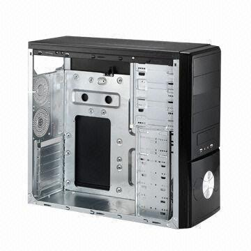

Chassie
Chassi är den komponent som håller alla delar på plats, lite som ett skal.
Ett chassi förekommer i många olika strolekar och utseende och är en hyfsat populär
komponent då dom flesta som spelar spel gärna vill ha ett chassi där man kan se
alla datorns andra komponenter såsom grafikkortet med mera. Ju större chassi man
har, desto fler komponenter får plats.

CPU
Ramminne
Nätagregat
Grafikkort
Moderkort
Startsida